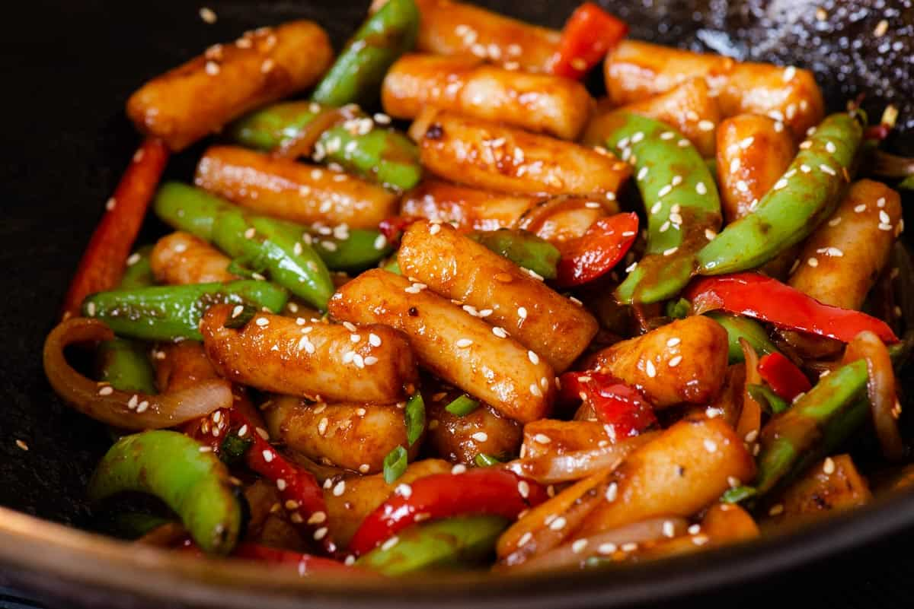
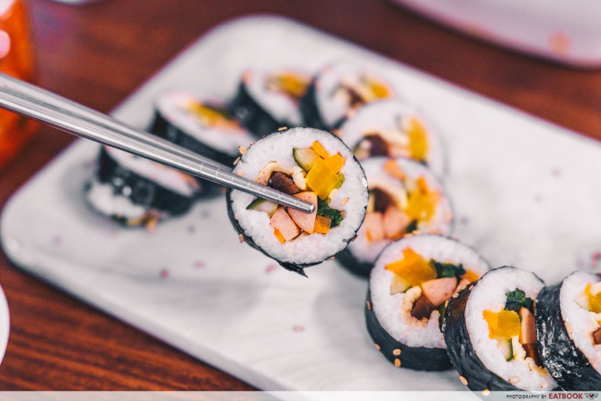

SOME OF MY FAVORITE KOREAN FOODS

RED RICE CAKES
A cylinder-shaped white rice cake made with short grain rice
KIMCHI
A spicy pickled or fermented mixture containing cabbage, onions, and sometimes fish, variously seasoned, as with garlic, horseradish, red peppers, and ginger.

KIMBAP
Kimbap consists of sesame-flavored rice and fillings like meat, veggies, egg, and cheese wrapped up in nori. It has a similar appearance to a sushi roll
